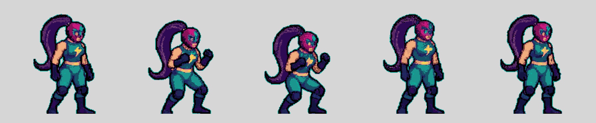
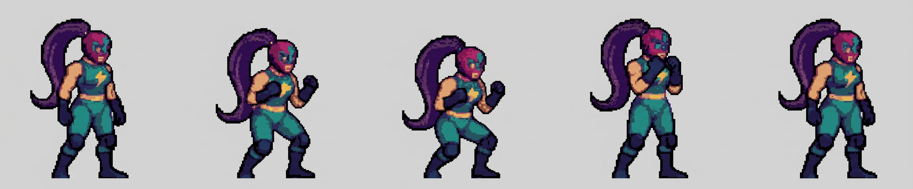
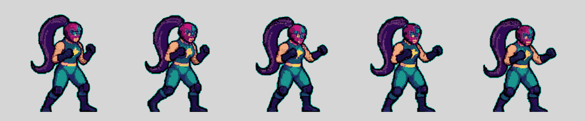
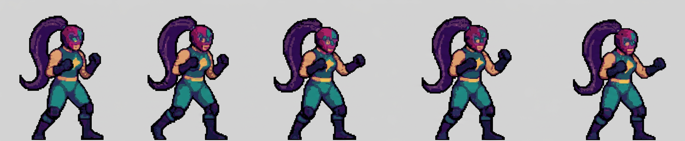
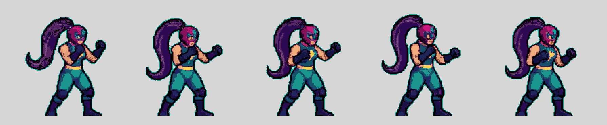
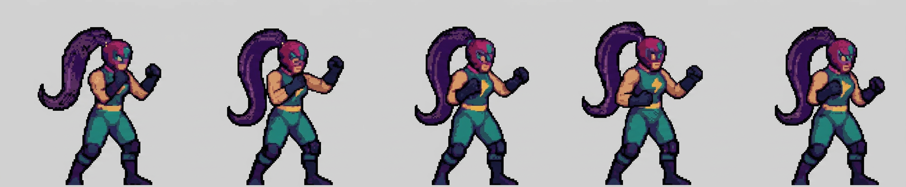
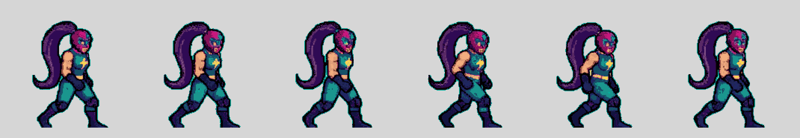

Visor · stance (15 frames) y walk (6)
Conmutador entre lo que devuelve la IA (ilustración suave, 27 734 colores) y el sprite pasado a píxel real (18 colores, rejilla entera, sin dithering).
—
Las hojas · stance en 3 trozos
Arriba lo que le di (original, a 2 px por píxel de arte), abajo lo que devolvió. Mantiene los 5 frames de cada trozo y la pose de guardia.






Las hojas · walk en 1 trozo
Aquí la IA se soltó en resolución y salió lo mejor de toda la prueba: ciclo de caminar completo, 6 poses, 1 408 × 768. Los 6 sprites caben en el mismo ancho del original.


Medidas: lo bueno y lo que hay que corregir
| Métrica | Original | IA tal cual | Pasado a píxel |
|---|---|---|---|
| Colores | 18 | 16 300-27 700 | 18-19 |
| Bordes suavizados | 5,7 % | 91,5 % | 16,7 % |
| Rejilla de píxel | 2 px exactos | no hay (11 % bloques) | píxel entero |
| Tamaño del sprite | 94 × 151 px | 243 × 394 px | 81 × 131 px |
| Stance | 15 frames | 15 | 15 |
| Walk | 6 frames | 6 · ciclo completo | 6 |
| Contorno exterior | sí (borde verde) | ninguno | ninguno |
Lo bueno: estas dos animaciones son más limpias que el original. La pose es más
legible, la coleta tiene volumen de verdad y el dibujo no arrastra el grano del arte viejo.
El walk es el mejor resultado de todas las pruebas: 6 poses coherentes, un ciclo completo.
Lo que hay que corregir antes de usarlo: el sprite pasado a píxel mide 81 × 131 px frente a los 94 × 151 del original, así que hay que reescalarlo y volver a medir su pivote. Al bajar de 243 px a 81 con NEAREST se pierden detalles finos (el rayo del pecho queda a 1-2 px y la cara se simplifica). Y la IA cambia el diseño en detalles: el cinturón pasa a dorado doble, el pecho se marca más y la visera cambia de forma.
0 filtrado en el recorte: los sprites son lo que devolvió la IA, solo recortados y bajados con NEAREST a una rejilla entera, aplanados a la paleta de 18 sin dithering.
Lo que hay que corregir antes de usarlo: el sprite pasado a píxel mide 81 × 131 px frente a los 94 × 151 del original, así que hay que reescalarlo y volver a medir su pivote. Al bajar de 243 px a 81 con NEAREST se pierden detalles finos (el rayo del pecho queda a 1-2 px y la cara se simplifica). Y la IA cambia el diseño en detalles: el cinturón pasa a dorado doble, el pecho se marca más y la visera cambia de forma.
0 filtrado en el recorte: los sprites son lo que devolvió la IA, solo recortados y bajados con NEAREST a una rejilla entera, aplanados a la paleta de 18 sin dithering.